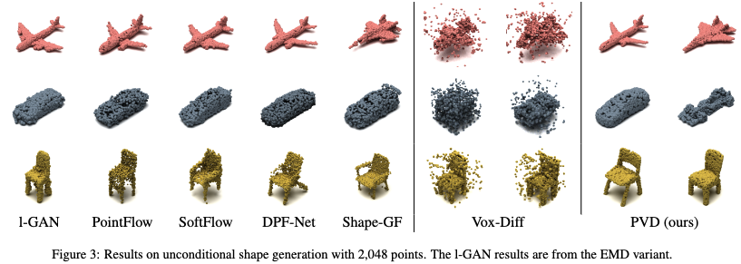
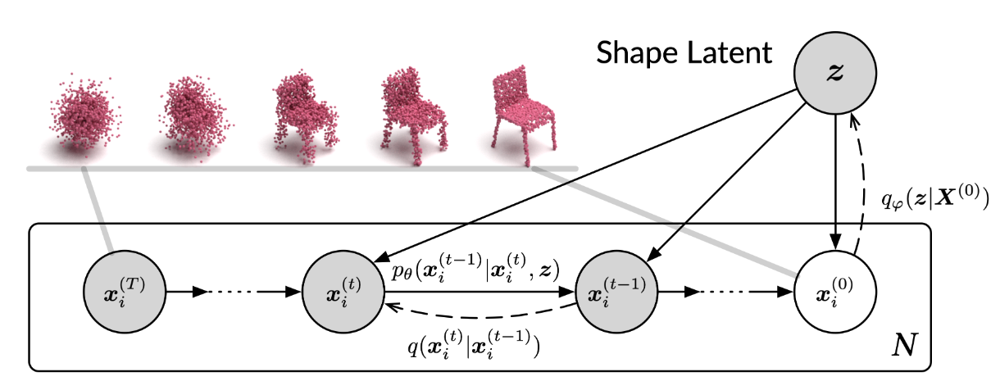
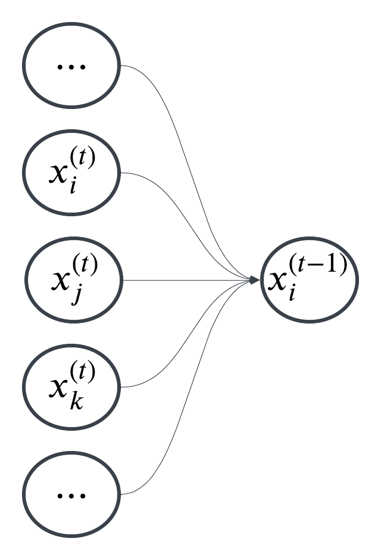
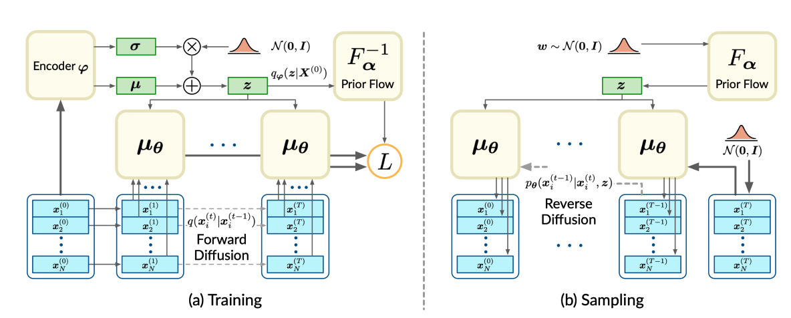
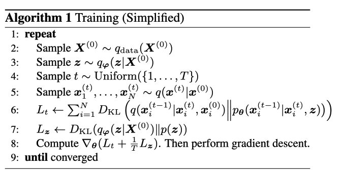
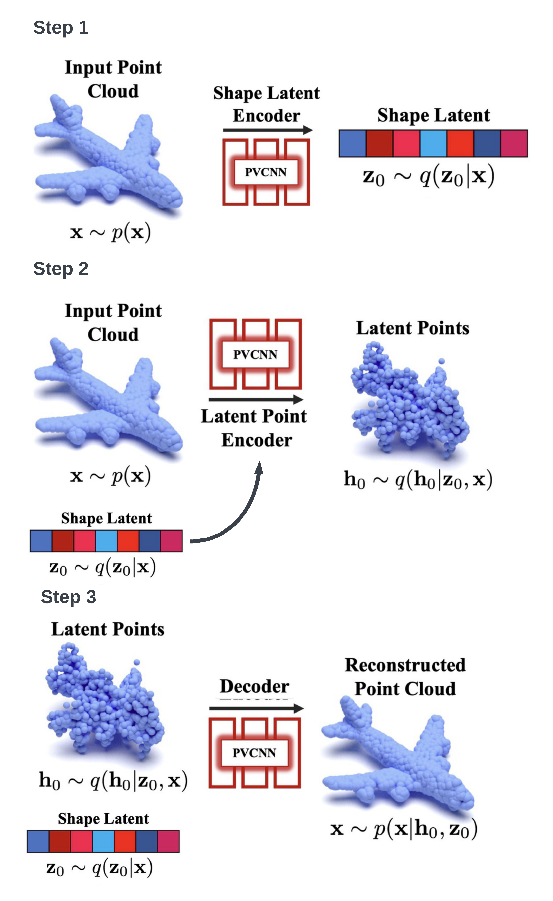
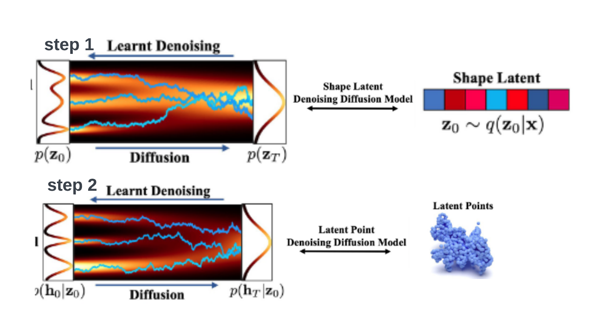
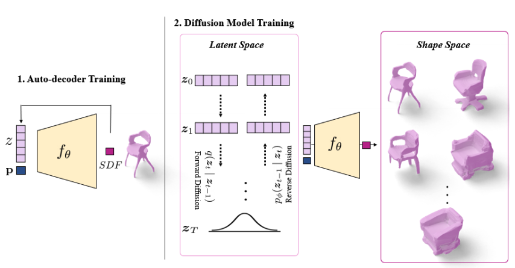
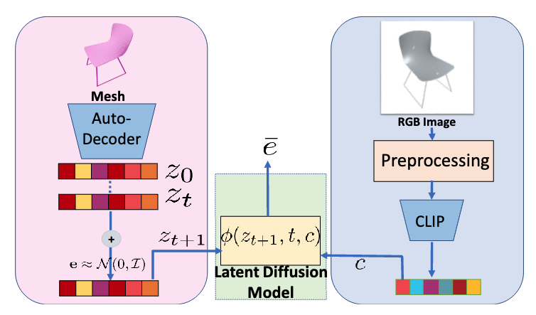
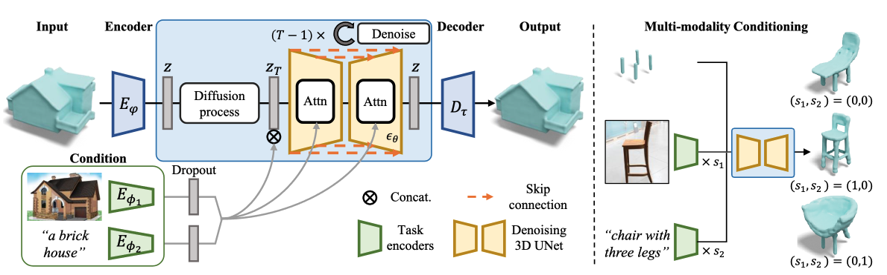

PVD, DPM, LION, SDFusion
Diffusion model has proven to be a very powerful generative model and achieved huge success in image synthesis. One of the most widely known application is the synthesis of images condition on text or image input. Models like … take one step further to generate short videos based on instruction.
Meanwhile extending this power model to 3D is far from trivial. It can be represented in point, voxel, surface and etc. Unlike image data, all these forms are less structured and should be invariant w.r.t. permutation. Each of the above data structures requires different techniques to deal with(i.e. PointNet for point cloud, graph neural network for surface data etc).
Direct application of diffusion models on either voxel and point representation results in poor generation quality. The paper
Here, we quickly review the training and sampling process with diffusion model. The DDPM parameterize the model learn the “noise” \(\epsilon_\theta(x_t, t)\) and the paper used a point-voxel CNN to represent \(\epsilon_\theta(x_t, t)\). The loss function is
\[\begin{align} \min_{x_t, \epsilon\sim\mathcal{N}(0, I)}&\|\epsilon-\epsilon_\theta(x_t, t)\|^2_2\\ \text{where } x_t =& \sqrt{\bar{\alpha}_t}x_0 + \sqrt{1-\bar{\alpha}_t}\epsilon. \end{align}\]WIth a trained model \(\epsilon_\theta(x_t, t)\), the sampling process is \(\begin{equation} \mathbf{x}_{t-1}=\frac{1}{\sqrt{\alpha_t}}\left(\mathbf{x}_t-\frac{1-\alpha_t}{\sqrt{1-\tilde{\alpha}_t}} \boldsymbol{\epsilon}_\theta\left(\mathbf{x}_t, t\right)\right)+\sqrt{\beta_t} \mathbf{z}, \end{equation}\) where \(z\sim \mathcal{N}(o, I)\).
In the context of this paper, \(x_0\in\mathbb{R}^{N\times 3}\) is point cloud data.
In the experiment part, the paper tested the algorithm on tasks of shape generation and shape completeion. It examined metrics such as Chamfer Distance(CD), Earth Mover’s Distance(EMD) and etc.

The paper
For clarity of discussion, we denote \(\boldsymbol{X}=\{x_i\}_{i\in[N]}\) to be a 3D shape in the form of point cloud and \(x_i\in \mathbb{R}^3\) for \(i\in [N]\) represents each point in the point cloud. Let \(\tilde{p}(\boldsymbol{X})\) be the distribution of shapes \(\boldsymbol{X}\) and \(p(x)\) be the distribution of points in arbitrary shapes.
The paper introduced a latent variable \(\boldsymbol{z}\sim q_\varphi(\boldsymbol{z}\mid\boldsymbol{X}^{(0)})=\mathcal{N}\left(z\mid\mu_\varphi(\boldsymbol{X}^{(0)}, \Sigma_\varphi(\boldsymbol{X}^{(0)}))\right)\). However, instead of apply diffusion process in latent space as in
This is also shown in the following graphical model.

In comparison, the PVD update each reverse diffusion step through updating all points simutaniously and can be viewed as following graphical model.

The forward process is the same as DDPM or PVD which is simply adding noise to the points. The reverse process is formulated as
\[\begin{gathered} p_{\boldsymbol{\theta}}\left(\boldsymbol{x}^{(0: T)} \mid \boldsymbol{z}\right)=p\left(\boldsymbol{x}^{(T)}\right) \prod_{t=1}^T p_{\boldsymbol{\theta}}\left(\boldsymbol{x}^{(t-1)} \mid \boldsymbol{x}^{(t)}, \boldsymbol{z}\right), \\ p_{\boldsymbol{\theta}}\left(\boldsymbol{x}^{(t-1)} \mid \boldsymbol{x}^{(t)}, \boldsymbol{z}\right)=\mathcal{N}\left(\boldsymbol{x}^{(t-1)} \mid \boldsymbol{\mu}_{\boldsymbol{\theta}}\left(\boldsymbol{x}^{(t)}, t, \boldsymbol{z}\right), \beta_t \boldsymbol{I}\right)。 \end{gathered}\]In this setup, \(p_\theta(x^{(0)})\) represent an image’s probability under the learned model \(p_\theta\) and, in below, we will use \(q_\varphi(z\mid \boldsymbol{X}^{(0)})\) as the encoder. For simplicity of discussion, we will use \(p_\theta\) to replace \(\tilde{p}_\theta\).
Similar to DDPM, the log-likelihood of reverse process \(p_\theta(x^{(0)})\) can be lower bounded by
\[\begin{aligned} \mathbb{E}\left[\log p_{\boldsymbol{\theta}}\left(\boldsymbol{X}^{(0)}\right)\right] &\geq \mathbb{E}_q {\left[\log \frac{p_{\boldsymbol{\theta}}\left(\boldsymbol{X}^{(0: T)}, \boldsymbol{z}\right)}{q\left(\boldsymbol{X}^{(1: T)}, \boldsymbol{z} \mid \boldsymbol{X}^{(0)}\right)}\right] } \\ &=\mathbb{E}_q\left[\log p\left(\boldsymbol{X}^{(T)}\right)\right. \\ &~~~~~~ +\sum_{t=1}^T \log \frac{p_{\boldsymbol{\theta}}\left(\boldsymbol{X}^{(t-1)} \mid \boldsymbol{X}^{(t)}, \boldsymbol{z}\right)}{q\left(\boldsymbol{X}^{(t)} \mid \boldsymbol{X}^{(t-1)}\right)} \\ &~~~~~~ \left.-\log \frac{q_{\boldsymbol{\varphi}}\left(\boldsymbol{z} \mid \boldsymbol{X}^{(0)}\right)}{p(\boldsymbol{z})}\right]. \end{aligned}\]The process is parameterized by \(\theta, \varphi\) and the variational lower bound can be written into KL divergencies,
\[\begin{gathered} L(\boldsymbol{\theta}, \boldsymbol{\varphi})=\mathbb{E}_q\left[\sum _ { t = 2 } ^ { T } D _ { \mathrm { KL } } \left(q\left(\boldsymbol{X}^{(t-1)} \mid \boldsymbol{X}^{(t)}, \boldsymbol{X}^{(0)}\right) \|\right.\right. \\ \left.p_{\boldsymbol{\theta}}\left(\boldsymbol{X}^{(t-1)} \mid \boldsymbol{X}^{(t)}, \boldsymbol{z}\right)\right) \\ -\log p_{\boldsymbol{\theta}}\left(\boldsymbol{X}^{(0)} \mid \boldsymbol{X}^{(1)}, \boldsymbol{z}\right) \\ \left.+D_{\mathrm{KL}}\left(q_{\boldsymbol{\varphi}}\left(\boldsymbol{z} \mid \boldsymbol{X}^{(0)}\right) \| p(\boldsymbol{z})\right)\right] . \end{gathered}\]This objective function can be then written in the form of points(instead of shapes) as follows,
\[\begin{aligned} L(\theta, \varphi) &= \mathbb{E}_q \Big[\sum_{t=2}^T\sum_{i=1}^N D_\mathrm{KL}\left(q(x_i^{(t-1)}\mid x_i^{(t)}, x_i^{(0)})\| p_\theta(x_i^{(t-1)}\mid x_i^{(t)}, z)\right)\\ &~~~~~~~~ -\sum_{i=1}^N\log p_\theta(x_i^{(0)}\mid x_i^{(1)}, z)+D_\mathrm{KL}(q_\varphi(z\mid \boldsymbol{X}^{(0)})\| p(z))\Big]. \end{aligned}\]Another important point about this paper is that it does not assume the prior distribution of the latent variable \(z\) to be standard normal. Instead, the algorithm needs to learn the prior distribution for sampling. Therefore, both side of \(D_{\mathrm{KL}}\left(q_{\boldsymbol{\varphi}}\left(\boldsymbol{z} \mid \boldsymbol{X}^{(0)}\right) \| p(\boldsymbol{z})\right)\) involves trainable parameters. An encoder \(q_{\boldsymbol{\varphi}}\left(\boldsymbol{z} \mid \boldsymbol{X}^{(0)}\right)\) is learned by parameterizing it with \(\boldsymbol{\mu}_{\varphi}\left(\boldsymbol{X}^{(0)}\right), \boldsymbol{\Sigma}_{\boldsymbol{\varphi}}\left(\boldsymbol{X}^{(0)}\right)\). An map \(F_\alpha\) that transform samples in standard normal to prior distribution is learned by parameterizing it with a bijection neural network and \(z=F_\alpha(\omega)\).


The latent diffusion model
The model is consist of a VAE to encode shapes to latent space and diffusion models that map vectors from standard normal distribution to latent space.
Stage 1: VAE
The VAE part, the encoding-decoding process has three steps:

Stage 2: Diffusion
There are two diffusion processes involved since there are two latent vectors. Both diffusion processes start from standard normal distribution and mapped to shape latent vectors and point latent respectively.

Sampling process
The sample generation process is consist of three steps:
During the training of VAE, LION is trained by maximizing a modified variational lower bound on the data log-likelihood with respect to the encoder and ecoder parameters \(\phi\) and \(\xi\):
\[\begin{aligned} \mathcal{L}_{\mathrm{ELBO}}(\boldsymbol{\phi}, \boldsymbol{\xi}) & =\mathbb{E}_{p(\mathbf{x}), q_\phi\left(\mathbf{z}_0 \mid \mathbf{x}\right), q_\phi\left(\mathbf{h}_0 \mid \mathbf{x}, \mathbf{z}_0\right)}\left[\log p_{\boldsymbol{\xi}}\left(\mathbf{x} \mid \mathbf{h}_0, \mathbf{z}_0\right)\right. \\ & \left.-\lambda_{\mathbf{z}} D_{\mathrm{KL}}\left(q_\phi\left(\mathbf{z}_0 \mid \mathbf{x}\right) \mid p\left(\mathbf{z}_0\right)\right)-\lambda_{\mathbf{h}} D_{\mathrm{KL}}\left(q_\phi\left(\mathbf{h}_0 \mid \mathbf{x}, \mathbf{z}_0\right) \mid p\left(\mathbf{h}_0\right)\right)\right] . \end{aligned}\]The priors \(p(z_0)\) and \(p(h_0)\) are \(\mathcal{N}(0, I)\). During the training of diffusion models, the models are trained on embeddings and have VAE model fixed.
Many previous works have discussed the limit of different methods of representing 3D shapes. Voxels are computationally and memory intensive and thus difficult to scale to high resolution; point clouds are light-weight and easy to process, but require a lossy post-processing step to obtain surfaces. Another form for representing shapes is SDF(signed distance function)
Coded Shape SDF: This is a function \(f_\theta(p, z)\) that maps a point \(p\) and a latent representation of shapes \(z\) to a signed distance(positive distance outside and negative distance inside). A set of shapes \(\mathcal{S}\) can be represented with \(f_\theta\) given a latent representation \(z_i\):
\[\begin{equation} \mathcal{S}_i:=\{\mathbf{b}\mid f_\theta(\mathbf{p}, z_i)=0\}. \end{equation}\]Training setup: DeepSDF
For the first part, the paper parameterizes the SDF with \(\theta\) and \(Z=\{z_i\}\) represents latent vectors. The objective function is following regularized reconstruction error:
\[\begin{gathered} \underset{\theta, Z}{\arg \min } \sum_{i=1}^N \mathcal{L}_{\text {recon }}\left(\boldsymbol{z}_i, \mathrm{SDF}_i\right)+\frac{1}{\lambda^2} \mathcal{L}_{\text {reg }}\left(\boldsymbol{z}_i\right) \text {, with } \\ \mathcal{L}_{\text {recon }}:=\mathbb{E}_{\mathbf{p} \sim \mathcal{P}}\left[\left\|f_\theta\left(\mathbf{p}, \boldsymbol{z}_i\right)-\operatorname{SDF}_i(\mathbf{p})\right\|_1\right] \text {, and } \\ \mathcal{L}_{\text {reg }}:=\left\|\boldsymbol{z}_i\right\|_2^2 . \end{gathered}\]Remarks:
For the second part, the paper used the latent vectors \(\{z_i\}\) generated during the training process in the first part as training data. The diffusion model follows the DDPM framwork and parameterized the model with \(\epsilon_\phi(z^t, t)\). The paper claimed that they are following

Sampling process
The unconditional sampling step is exactly the same as DDPM. The reverse process is approximated by \(p_\phi(z^{t-1}\mid z^t)\) and is parameterized as a Gaussian distribution, where the mean \(\mu_\phi\) is defined as
\[\mu_\phi\left(\boldsymbol{z}^t, t\right)=\frac{1}{\sqrt{\alpha_t}}\left(\boldsymbol{z}^t-\frac{1-\alpha_t}{\sqrt{1-\bar{\alpha}_t}} \epsilon_\phi\left(\boldsymbol{z}^t, t\right)\right).\]
In the cases of conditional sampling, CLIP model
In 3D-LDM discussed above, the model architecture is an auto-decoder DeepSDF that learns the embedding during training. In
The algorithm is consist of an auto-encoder for compression T-SDF data and a diffusion model in latent space.
3D shape Compression of SDF: The author leveraged a 3D variation of VA-VAE
Latent diffusion model for SDF: This part is exactly the same as DDPM. The paper use a time-conditional 3D UNet to approximate \(\epsilon_\theta\) and adopt the simplified objective function
\[L_{\text {simple }}(\theta):=\mathbb{E}_{\mathbf{z}, \epsilon \sim N(0,1), t}\left[\left\|\epsilon-\epsilon_\theta\left(\mathbf{z}_t, t\right)\right\|^2\right].\]